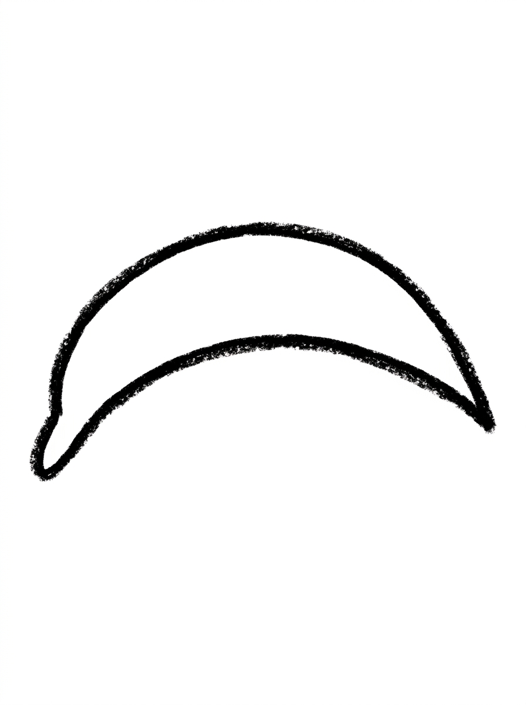
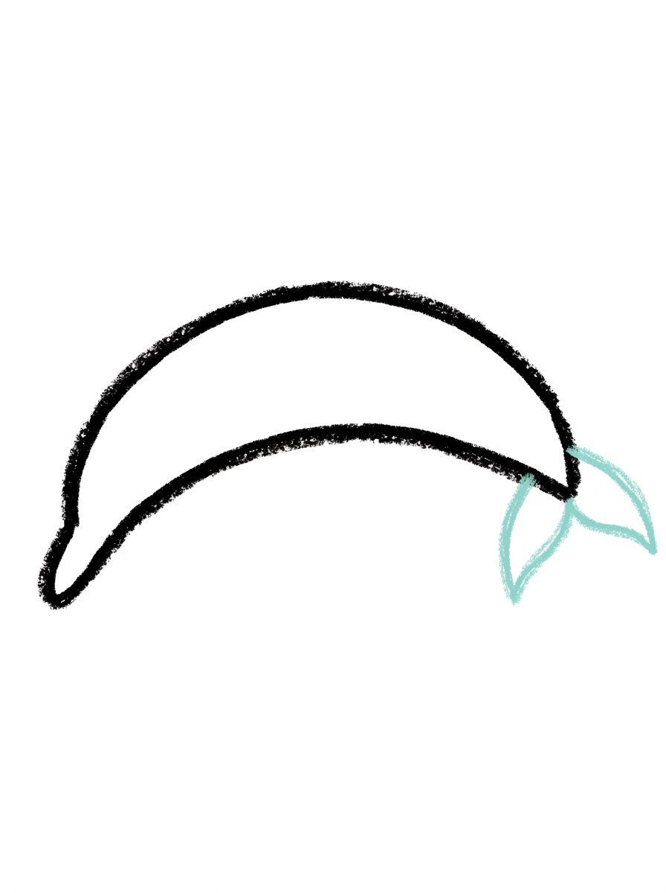
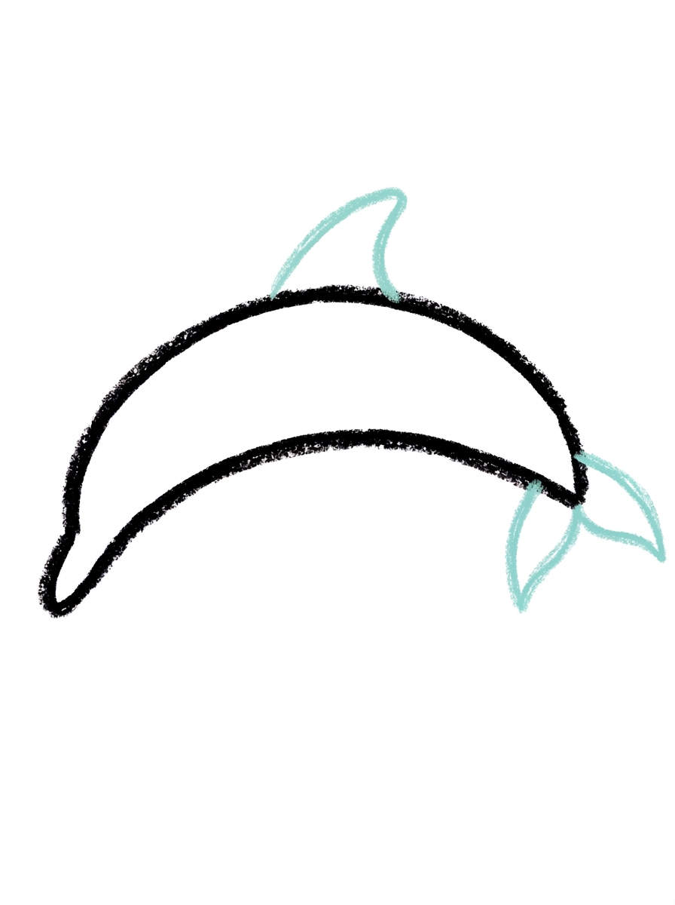
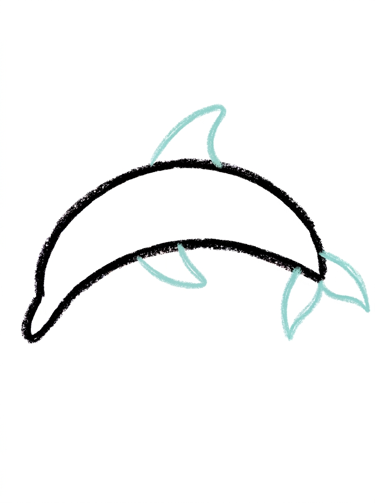
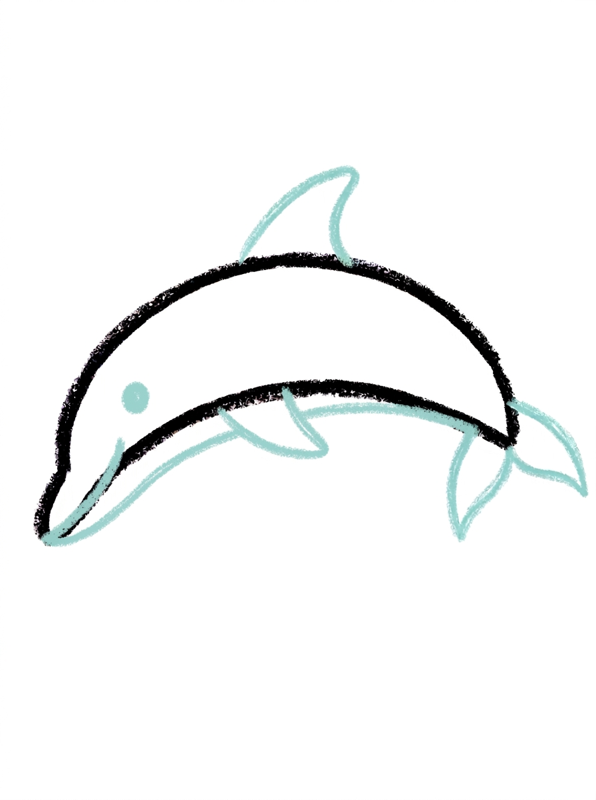

Dolphin Drawing for Kids How to Draw A Dolphin in 6 Easy Steps
Quick Answer
Draw a dolphin in six easy steps: a long curved crescent body, a two-lobed tail fluke, a curved triangle dorsal fin, a small pointed flipper, then a dot eye and a long mouth line along the belly. Color it grey-blue with a pale blue belly. Made for ages 3 and up — no signup needed, just print and draw.
At a Glance
- Subject: How to draw a dolphin
- Ages: 3+
- Steps: 6 steps
- Time: ~15 min
- Difficulty: Easy
- Supplies: Paper, crayons
Dolphins are the animal kids ask to draw after every aquarium trip and beach day. This one starts from a single long curved crescent — everything else is a fin, a tail, and a smile line attached to it.
✏️ Draw Your Dolphin in 6 Easy Steps
One step per box — this step by step dolphin drawing shows each new part in a different color so kids can see exactly what changed.
Step 1: The Body

Draw one long curved shape like a fat crescent, thick in the middle and pointed at both ends, with the front end curving slightly down. This is your dolphin's body.
Step 2: The Tail Fluke

At the back end of the body, draw the tail fluke: two pointed lobes joined at the center.
Step 3: The Dorsal Fin

On top of the body at its middle, draw one curved triangle fin.
Step 4: The Flipper

Draw one small pointed oval under the middle of the body for the side flipper.
Step 5: The Face

Draw one round dot eye inside the body near the front end. Then draw one long curved line starting at the front tip and running along the lower body, following its curve — this is the mouth line.
Step 6: Color It In

Color your dolphin! Grey-blue for the top of the body, the tail fluke, the dorsal fin and the flipper, very pale blue for the belly, black for the eye, and dark grey-blue for the mouth line. Great drawing!
📊 Dolphin Drawing by Age
Every age can join in — just adjust the job.
| Age | What they can do | Tip |
|---|---|---|
| 3-4 | Draw the long curved body shape and color the dolphin grey-blue. | Draw the body shape together hand-over-hand once; after that, most preschoolers can trace their own version beside it. |
| 4-5 | Add the two-lobed tail fluke, the dorsal fin, and the flipper in the right places. | Name the parts as they draw them — fluke, dorsal fin, flipper — because ocean vocabulary is half the fun at this age. |
| 6+ | Complete all six steps, including the long mouth line that follows the body's curve to the front tip. | The mouth line is the hardest part; suggest starting it at the front tip and sweeping back slowly so it follows the body instead of cutting across it. |
🖨️ Download Your Free Dolphin Drawing Printable
The printable lays out all 6 steps one per box, big enough for little hands — kids draw right alongside each step.
⬇️ Open Free Printable 🖨️ Print🎁 Free printable for ages 3+
🐬 Ocean Leap Scene
Build an ocean scene around your dolphin: draw wavy lines below it for waves, a few bubbles rising from its mouth line, and a second smaller dolphin leaping behind it using the same steps. Then add a splash where the dolphin's tail meets the water — a starburst of little lines and dots. The scene turns one tutorial into a full picture your child can hang up or give away.
What You'll Need to Draw A Dolphin
You'll need a pencil, an eraser, and crayons or markers. Have grey-blue ready for the top of the body, tail fluke, dorsal fin, and flipper, very pale blue for the belly, black for the eye, and dark grey-blue for the mouth line. Plain paper works; blue construction paper also makes a fun ocean background if you draw in dark crayon.
What They're Learning
This tutorial practices the long controlled curve: the body's fat crescent shape, the two-lobed tail fluke, a curved triangle for the dorsal fin, and a pointed oval for the flipper. The step-5 mouth line teaches a key skill — drawing a line that follows the curve of an existing shape — and kids pick up real ocean vocabulary (fluke, dorsal fin, flipper) while placing each part.
Make It Yours
Color your dolphin pink for a storybook twist, draw a whole pod of dolphins in different sizes leaping together, add a beach ball balanced near the front tip, or draw the dolphin diving down by flipping the crescent so the front end points lower. A ring of bubbles around the flipper makes it look like it's playing.
🛒 Our Favorite Drawing Supplies
These are the supplies we reach for in our own home — washable (because kids), quality paper, and enough colors to avoid fights.
As an Amazon Associate, MomYouNeedThis earns from qualifying purchases — at no extra cost to you.
💡 Dolphin Drawing Tips for Parents
The mouth line at step 5 is where this drawing is won or lost: it must hug the body's curve, starting at the front tip and sweeping along the lower body. If it cuts straight across, the dolphin looks like it has two bodies. Have your child trace the path in the air with a finger first — that little rehearsal makes the real line much easier.
The body's crescent curve does all the work in this tutorial, so spend your encouragement there. A curve that's too straight just makes a calmer, swimming dolphin — not a mistake. And if the tail fluke lands slightly crooked, real dolphin flukes angle all the time when they leap, so it still reads perfectly once colored.
✏️ Dolphin Drawing Step by Step
This dolphin drawing hangs everything on a single shape: one long crescent body, thick in the middle and pointed at both ends. The tail fluke, dorsal fin and flipper are small shapes pinned onto that crescent, and the face is two marks added once the body is complete.
Because the fin and flipper are pinned on, their positions matter more than their shapes. Both belong at the body's middle — the fin on top, the flipper underneath. A fin drawn near the front end reads as an ear or a crest, and the dolphin quietly turns into a different animal.
The remedy is to find the middle before drawing either one: put a finger on each pointed end of the crescent and slide them toward each other until they meet. Where they meet is where the fin goes on top and the flipper goes below.
See free dolphin printable for more.
✏️ One Shape Per Step, Six Steps Total
Two orientation checks keep this dolphin drawing swimming the right way. First, the ends: the front end of the crescent curves slightly down, and that dipping end is the head end. The tail fluke belongs on the opposite end — check after Step 2 that the fluke is not sitting on the dipping end, or your dolphin is swimming backwards.
Second, the eye count. A dolphin seen from the side shows exactly one eye: one round dot, near the front end, in Step 5. Two eyes is the most common well-meant addition, and it flattens the dolphin into a front view that fights the crescent body underneath it.
At colour time there is one more check: the very pale blue belongs underneath, on the belly, and the grey-blue goes everywhere on top. If the two blues swap places, the dolphin looks upside down — which is at least easy to spot before the crayon gets far.
See free dolphin printable for more.
🐬 Leaping Dolphin Drawing
Repeat the tutorial twice more at different sizes and the three dolphins become a school. Draw one big dolphin near the top of a fresh page, a medium one below it and a small one below that, then run one long wavy line across the page above the two smaller dolphins.
That wavy line is the surface of the sea. The dolphin above it is mid-leap; the two below it are still swimming up to jump. The same six steps, three times over, suddenly tell a story — and the first drawing gets company instead of sitting alone on the page.
See free dolphin printable for more.
❓ Dolphin Drawing FAQs
What is the easiest way to draw a dolphin?
Start with one long curved crescent shape for the body — thick in the middle, pointed at both ends. Then add the tail fluke, one dorsal fin on top, one flipper underneath, a dot eye, and the long mouth line. Building from the body outward keeps every part in the right place.
What age is this dolphin drawing for?
It's made for ages 3 and up. Younger kids can draw the body and fins and do the coloring, while kids 5 and 6 can usually manage the mouth line and all six steps on their own.
What supplies do we need?
A pencil, an eraser, paper, and crayons or markers. For colors you'll want grey-blue for the top and fins, very pale blue for the belly, black for the eye, and dark grey-blue for the mouth line.
Is the printable really free?
Yes — every printable on MomYouNeedThis is 100% free, including this dolphin drawing tutorial. There is no signup, no email, and no catch — just download, print, and draw.
How do I print it?
Open the PDF and choose Print, then set the scale to 100% (sometimes called Actual Size) so the steps print at full size. The tutorial is designed for regular US Letter paper, and plain printer paper works perfectly.
What is the dolphin's tail called?
The pointed shape on the tail is called the fluke — it's made of two pointed lobes joined at the center, like two triangles holding hands. It's the part of a real dolphin that pushes it through the water.
Why does the dolphin have a fin on top?
That curved triangle on top is the dorsal fin — it's what keeps a real dolphin steady as it swims. In the drawing it sits right on top of the body at its middle, like a little sail.
Can we draw the dolphin facing the other way?
In this tutorial the dolphin faces left, leaping. To flip it, simply mirror everything: the pointed front end goes on the right, the tail fluke on the left, and the eye near the new front tip. The shapes and order don't change at all.
📚 Keep Exploring
- ✏️ All 53 Drawing Tutorials 53 free step-by-step drawing tutorials for kids.
- 🐾 Animal Coloring Free printable animal coloring pages for little learners.
- ✏️ Drawing Practice Free printable drawing pre-writing worksheet for toddlers.